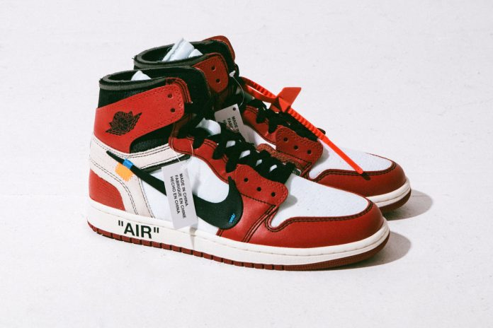
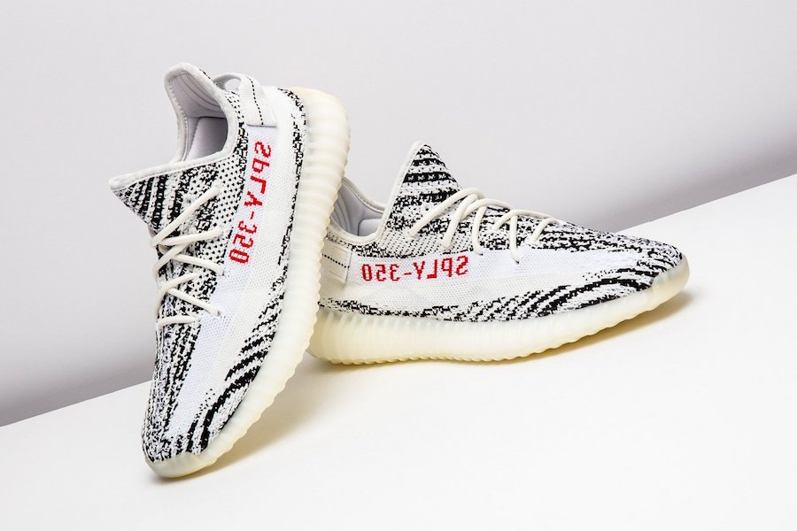

At this point in time streetwear is probably one of largest focal points of fashion in this modern day and
age. It has been taken over by the masses while also reaching into the high fashion scene with relative
ease. Making streetwear the most widely accepted form of fashion in the world, only second to that of
formal wear and even instance of streetwear has begun to spill into that as well. Streetwear originated
from skater culture, very rugged, very personalized but later it was refined by the Japanese culture to
become a more acceptable norm. Once celebrities in North America joined this fad it quickly began to be
picked up by fashion designers and then seeping into the lives of everyday people. With the major growth
in streetwear and the adoption into the masses, a dialog about the most controversial aspect of
streetwear is far to big to ignore; the resale market.
Resale one of the most popularizing aspects of streetwear culture. Resale market is created by the
exclusivity of the products released by brands, designer and the additional factor in price of these items
is set by how sought after they are. The resale market allows the consumers a second chance at getting
items they originally missed while also providing the seller extra income. The reselling market is extremely
useful for young kids who do not have a lot of disposable income, reselling gives them a chance to acquire
the shoes they really want. Reselling also allowed the streetwear culture grow, as people figured there is
profit here to be made. With there being so many third-party sellers such as StockX, GOAT, and Grailed it
is clear to see resale is here to stay regardless if you want it or not.
Resale is undeniably apart of the streetwear culture and comes with many benefits, but the downsides
are equally as powerful. The resale does allow those a second chance to acquire the product they originally
wanted but what happens when one is taking said products just to resell them to customers. Imagine
taking the original opportunity from other consumers just come back and resell the products back to
them, that’s truly unfair. But now the prices aren’t increase by a small amount, these products increase
y the demand due that products that were originally 200 retail can now skyrocket to prices in the
thousands. A tool created to help consumers to get what they were originally unable to acquire is now
being used to take advantage of said consumer.
 
After discussing the benefits and negatives of reselling, it is clear to see how complicated this topic truly
is. But after seeing both sides it is clear to see that reselling is a part of the streetwear culture and
somewhat of a necessity but there are some changes that need to be made to the market place. Making
a fives or more profit on a product should be unacceptable and these reselling brands need to somewhat
dictate where to draw the line and company creators need to find away to make there products more
accessible thus decreasing the prices in the resale market. Besides these few negatives resale should be a
welcomed addition to the streetwear culture.